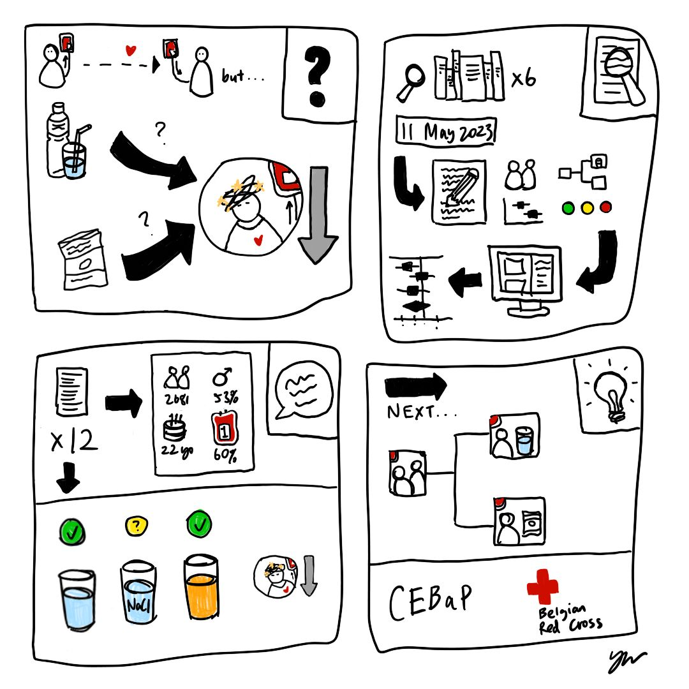

I am in the second year (out of three I hope!) of my PhD, and I am broadly investigating the short- and long-term health impacts of donating whole blood. Here, you can find out more about the questions I'm trying to answer, as well as the teaching, service, and public engagement that are integral to my doctoral experience.
I am fortunate to be funded by the National Institute for Health and Care Research (NIHR), supervised by Dr Lois Kim, and advised by Dr Stephen Kaptoge. You can read more about our research group here!
What a whirlwind of a week! I've been moving forward with my analyses of the long-term health impacts of donation, which have proven challenging due to the poor predictive performance of some of my models. I seem to have addressed this in the nick of time (i.e., two hours ago) and will spend the next week writing up how I've improved those models. I've also received some really useful comments on a manuscript from co-authors and will make important changes to the structure and/or framing of that work before moving forward with journal submission. And I taught a three-hour coding consolidation session on short notice, which brought great fun to my week!
Wu Y, Qi H, Di Angelantonio E, Kaptoge S, Wood AM, Kim LG. Risk factors for vasovagal reactions in blood donors: A systematic review and meta-analysis. Transfusion. 2025 Jan;65(1):211-223. doi: 10.1111/trf.18078.
Though giving blood is generally safe, <5% of donations result in donors feeling faint or fainting. Individual studies have examined risk factors for this side effect, but we know little about the consistency and quality of the evidence for these risk factors. For my first PhD project, I reviewed the literature on this topic and synthesised the published evidence using both statistical and narrative methods.
I previously presented this work at a campus "Research Celebration" event in April 2024 and a departmental PhD student seminar series in June 2024.
Wu Y, Kim LG. Donation frequency and vasovagal reactions in English whole blood donors: Associations and mechanisms. Poster presented at: The Annual British Blood Transfusion Society Conference; 2024 Sep 17-19; Glasgow, Scotland.
Our review (see above toggle) identified first-time donor status and previous faints as important risk factors for feeling faint during or after blood donation. However, we know little about why these characteristics, known collectively as "donation history", impact someone's risk of feeling faint. For my second PhD project, I analysed data from 60 thousand English blood donors to find out whether psychological responses to donation explained these differences in risk.
I have also presented this work at a Cambridge Public Health networking event in May 2024, a McMenemy Seminar at my college, Trinity Hall, in November 2024, and a work-in-progress seminar within my research unit in November 2024.
I currently supervise first-year medical students in Foundations of Evidence-Based Practice (4 weeks). In Cambridge, supervisions are small-group teaching sessions where learners discuss lecture content and its real-world applications with someone already working in their field of study.
I currently serve as a teaching assistant (~8 hours) and exam grader (~8 hours) for statistics and epidemiology modules within the MPhil in Population Health Sciences.
I currently serve as a peer reviewer for donor-health-related articles submitted to Vox Sanguinis, the flagship journal of the International Society of Blood Transfusion.
I currently serve as the co-chair of my department's PhD student committee and am also a member of my departmental equality, diversity, and inclusion (EDI) committee. In 2024, I supported the organising of my research unit's away day.
I periodically suggest changes to the English blood service's donor-facing communications materials to improve their clarity and readability from dual donor and researcher perspectives. You can read about the resulting changes here.
Seeing that a colleague from the Belgian Red Cross, Dr Hans Van Remoortel, had lost his poster en route to an international blood transfusion conference, I created the below simple sketch of the poster, which was subsequently displayed on an A4 sheet of paper during the conference!
I am developing an activity for the 2025 Cambridge Festival, a multi-day event across the city that invites local publics to engage with university-hosted research. I previously organised (see here) and volunteered for three activities during the 2024 iteration of the same festival. I have also volunteered at local charity Abbey People's Eager Explorers event, which shared university research with children and families. Finally, I previously volunteered for a "Hopes and Fears Lab" run by the Kavli Centre for Ethics, Science, and the Public, which involved conversing with local publics about their hopes and fears about the future of science and technology over iftar.
I currently volunteer with I'm a Scientist, which gives me the chance to chat with primary and secondary school students about careers in science. I also serve as a Student Ambassador for my college, Trinity Hall, which allows me to give tours and Q&As to prospective students from diverse socioeconomic and geographic backgrounds.
I was a 2024 East of England finalist for Famelab, a science communication competition that invites early-career researchers to speak for three minutes about their research to diverse audiences.